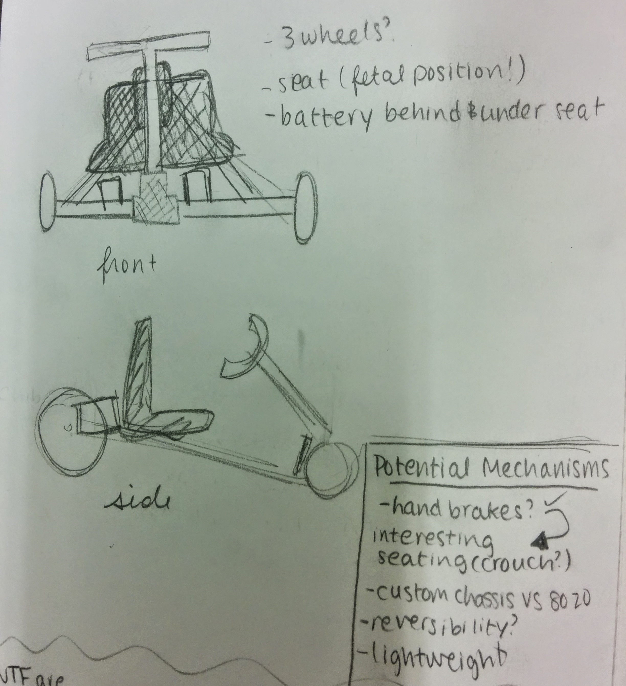

CONNIE LIU
FAST AND FURIOUS
with a dash of love (handles)

Meet Lovehandles. Packed in that small(ish) exterior is a powerhouse of 36V of battery, a Turnigy SK3 brushless motor, a full size Kelly controller, and enough power to hit 20 mph with a single rider.
Lovehandles was the product of the special section of MIT's Design and Manufacturing class (2.007), or affectionately called 2.00Go Kart. Our kart was posed with a few design constraints: no more than four 12V batteries, a maximum speed of 20 mph (for safety reasons), the ability to carry a single rider, and a cost of under $500. With these parameters in mind, we set out to conceptualize, design, and finally build what is now Lovehandles.
Our go kart started as a few early stage, somewhat unrealistic ideas on paper. After completing design critiques with the class instructors, we began to redraft our plans. A semblance of what you now see as Lovehandles took shape. The building began as a series of sample joints made of MDF to test our concept. After discovering that our original design was very susceptible to high bending stresses, we added additional 80/20 for support to allow the structure to more easily carry heavier weights. We also re-designed the electronics deck arrangement to make parts the parts more easily serviceable if a fuse blew or the controller broke on us.
Our initial prototypes began with MDF joints and lots of masking tape. To test sizing and avoid wasting expensive parts, we used laser cut MDF to test our parts before sending them over to the water jet to be created out of aluminum. This small act of precaution made a huge difference as we avoided
Lessons Learned
Designing and building Lovehandles was not only a lot of fun and excitement, but also a huge learning experience. To submit to my love of lists, here are a few skills I picked up along the way:
Budgeting: One huge component of the class were our weekly purchase orders. Material purchases could only be made on Tuesdays, and that meant lots of foresight and planning purchases __. With this and the $500 budget constraint, obtaining supplies became somewhat of a struggle, especially during the later weeks.
Shop Smarts: There were multiple times in the course of this class that my life was in danger. However, under the watchful eyes of the shop instructors, I was able to escape many a near death experience with consistent hair tying, goggle wearing, and general self-awaredness. This was my introduction to using many of the tools that I now know and love, including dremels, the cold saw, the in-shop mini lathe, water jet, and many more.
Wish List of Changes
Despite our many fortuitous successes, there were also many things that we could have improved had there been more time. For example, I would love to have taken the time to enable a reverse driving mode. With the powerhouse of a controller we bought with over 30% of our budget, we had a lot of fine tuning capabilities and potential cool features that we could have enabled that other teams did not. However, due to time constraints, we were unable to enable many of them. When the kart accelerated too quickly, the 40A fuse on the batteries would often blow and render our kart useless until replaced, an annoyance that could have been avoided if we had taken the time to limit the current draw with the Kelly controller software.